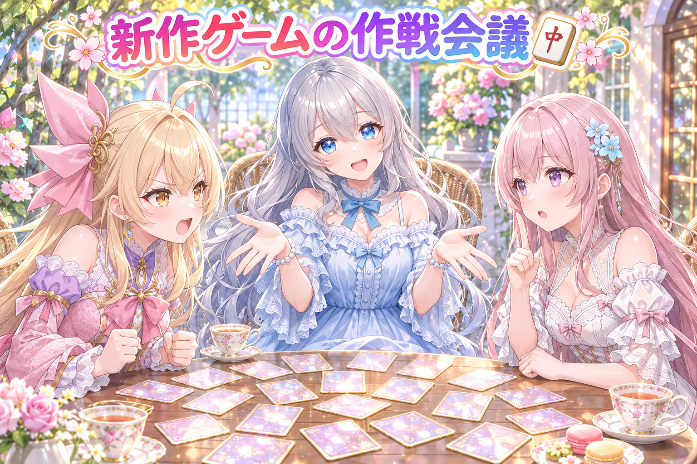
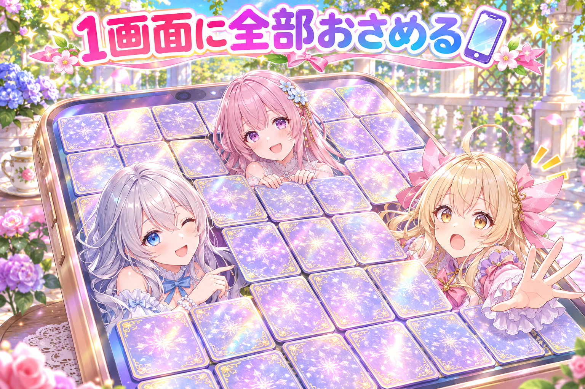
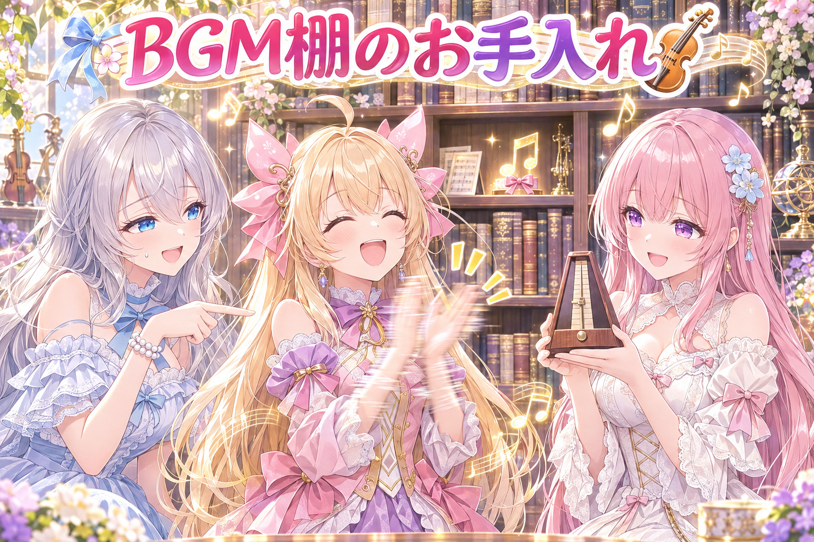
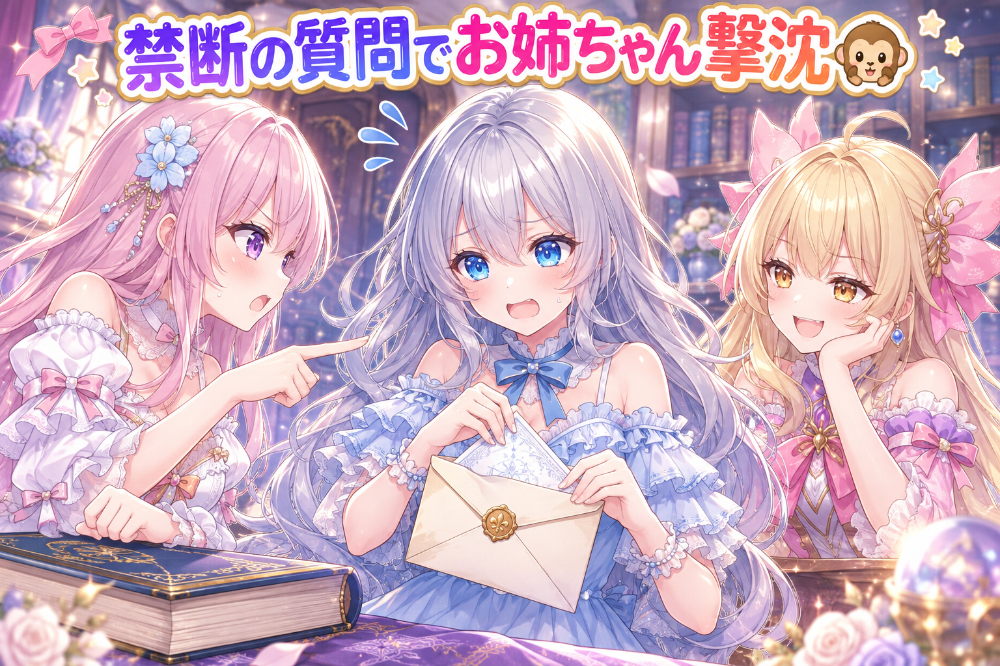

📌 3行まとめ
- 漢字の札をめくって熟語を作る、オリジナルの多人数ゲーム『漢字の神経衰弱』の遊び方を固め、試作を動かし始めた
- 横取りの早押しボタン、札の枚数の選択、スクロールなしの1画面といった遊びやすさの決まりを細かく詰めた
- 夕方にパソコンが勝手に再起動する事件もありつつ、ゲームにBGMを入れ、動画用のBGM棚も手入れした

ルピナス （笑顔）
はーい、常連リスナーさん、こんにちは！今日もAIBSの小さな作業部屋へようこそ。お茶の準備はできてる？

アイリス （大笑い）
お姉ちゃん、前回はカットインの白いフラッシュで吹き出しが消えちゃった事件だったよね！あたし今日は何も消してないよ！

フィオナ （ドヤ顔）
アイリスちゃん、今日は消すどころか、ゼロから増やす日でしたよ。なんと、新しいゲームを作り始めたんです。

ルピナス （ウインク）
そう、今日は漢字とトランプ遊びを合体させた新作ゲームのお話。最後には、ちょっと答えにくい質問コーナーもあるから覚悟してね。
1. 新作ゲーム『漢字の神経衰弱』の作戦会議🀄

今日いちばんの大仕事は、三姉妹のオリジナルゲームづくりです。裏向きの漢字の札をめくって、2字（別のモードでは3字）の熟語を作り、字の並びと読みを答えて辞書に載っていれば正解、という神経衰弱と熟語あそびを合わせたルールにしました。
ログインや登録なしで、合言葉やURLを送るだけで友だちとネット越しに遊べること、スマホでもパソコンでも遊べることが最初からの条件です。
さらに、盤の字で作れる言葉を部屋ができた瞬間にぜんぶ数えておき、用意した組み合わせ以外の言葉を見つけたら『かくれ熟語発見！』として点を上乗せする仕組みを主役に据えました。見つけた熟語が意味つきで溜まっていく図鑑や、読みの難しさを最初に選べる設定、ペアが作れなくなったら終わる仕組みも話し合いました。

ルピナス （ふつう）
では作戦会議、議題はひとつ。『正解はどこまで認めるか』。用意した組み合わせだけを正解にする派と、辞書に載ってれば何でもOK派。はい、どうぞ。

アイリス （ドヤ顔）
はいっ、辞書に載ってれば何でもOK派！だって自分で見つけた言葉が正解になったら、めっちゃ気持ちいいじゃん！

フィオナ （考え中）
わたしは慎重派です。用意していない言葉まで認めたら、判定がぶれたり、思いがけない言葉が出てきたりしませんか？

アイリス （怒り）
フィオナ、そういうとこだよ！ゲームは自由が一番なの！

フィオナ （ふつう）
自由と無法は違います、アイリスちゃん。同じ札で作れる熟語が実は2つも3つもあったら、どれが正解か揉めますよね？
ルピナス （笑顔）
どっちも正しいんだよね。だから今日の答えは『両方』。部屋を作った瞬間に、盤の字で作れる言葉を全部数えておくの。用意した言葉はふつうの正解、用意してない言葉は『かくれ熟語発見！』でボーナス。

アイリス （びっくり）
え、じゃあ揉めてた二人とも勝ち？あたしの自由も、フィオナの慎重も、両方入ってる！

フィオナ （笑顔）
しかも、事前に全部数えてあるので、判定がぶれる心配もありません。映せない言葉は判定の前に弾くリストも用意します。

アイリス （笑顔）
じゃあさ、見つけた言葉が溜まっていく図鑑も欲しい！レアな言葉ほどキラキラするやつ！
ルピナス （ウインク）
それも入れるよ。ただ登録なしのゲームだから、図鑑はその端末の中にだけ保存。機種を変えたら最初からね。

アイリス （衝撃）
え……じゃああたし、スマホ絶対落とせないじゃん！図鑑のために一生このスマホと生きる！

フィオナ （呆れ）
アイリスちゃん、さっき『ゲームは自由が一番』って言ってましたよね。一番不自由な人になってます。
📝 ポイント（初心者向け解説・技術メモ・まとめ）
- 初心者向け解説：答えをあらかじめ全部しらべておく作戦は、宝探しで地図を先に全部描いておくようなもの🗺️ 宝を埋めた人が忘れていた宝まで地図に載っているから、見つけた子をちゃんとほめてあげられます。
- 技術メモ：部屋作成時に盤の札から作れる2字・3字の並びを総当たりし、辞書と照合して成立語集合を先に作る。仕込み語との差分を『かくれ熟語』として加点。判定前に除外リストで不適切語を弾く。ゲーム本体は apply(state, action) が新しい状態とイベント列を返す純粋関数の形にして、画面の演出とルールを切り離した。辞書は商用利用も可能なライセンスの公開辞書を重ねる方針（大手の国語辞典そのものは使わない）。
- ひとことまとめ：正解は先に全部数えておくと、自由と公平を両立できる。
2. 早押しで横取り！「それ、あるよ！」ボタン🔔
多人数ならではの盛り上がりとして、ほかの人の手番に割り込める『それ、あるよ！』ボタンを作ることにしました。手番の人が考えている間に、表になった札で作れる言葉に気づいた人が早押しで横取りできます。
押されたことはその場で全員に分かるようにして、考えている人がドキッとする仕掛けにしました。ただし横取りで間違えると、自分の手番が一周とばされ、その間はボタンも押せなくなるペナルティつき。ボタン自体を使うかどうかは、ゲームを始める前にオン・オフで選べます。
ルピナス （ふつう）
じゃあ小芝居でやってみましょ。私が手番ね。うーん、この札とこの札で……なんて読むんだっけ……。

ルピナス （びっくり）
早っ！まだ私、札の向きすら確かめてないんだけど！

フィオナ （無表情）
アイリスちゃん、その札、山でも川でもありません。
ルピナス （笑顔）
はい、ペナルティ発動。アイリスは一周おやすみで、その間はボタンも押せません。

アイリス （泣き）
ボタンに手が届かない……！見えてるのに押せない……！これ一番つらいやつ！
フィオナ （考え中）
でも、この重さが大事なんです。罰が軽いと、全員が当てずっぽうで押し続けて、手番の人が何もできなくなりますから。
ルピナス （ふつう）
そうね。あと、押せるのは相手が答えを出し切る前まで。考えてる最中に誰かが押したら、ちゃんと見えるようにするの。
フィオナ （ドヤ顔）
では次はわたしの番ですね。この札とこの札で……。

フィオナ （びっくり）
お、お姉ちゃん！？さっきまで進行役だったじゃないですか！
アイリス （大笑い）
お姉ちゃんが一番早押し上手じゃん！あたし、おやすみ中だから見てるだけー！
📝 ポイント（初心者向け解説・技術メモ・まとめ）
- 初心者向け解説：横取りボタンは、おやつの取り合いに『はずれたら次のおやつは一回がまん』という約束をつけるようなもの🍪 がまんがあるから、みんな本気で考えてから手を伸ばします。
- 技術メモ：早押しはサーバー側で最初の1件だけを受理し、押下イベントを即時に全員へ配信して手番プレイヤーの画面にも表示。誤答時は該当プレイヤーに『1周スキップ』状態を付け、その間は押下を無効化。部屋作成時の設定でボタン自体をオン・オフできる。
- ひとことまとめ：盛り上げる仕掛けには、ちょうどいい重さのペナルティを添える。
3. スクロールなしの1画面に全部入れる📱

試作を見たルピナスが気づいたのは、キャラを大きく立たせると札を置く場所が足りなくなる問題でした。そこで札の枚数を12・24・36枚から選べるようにし、どの場面でもスクロールせずに1画面で遊べることを決まりにしました。
キャラは、しゃべる子だけがいろんな位置からひょっこり顔を出す形にして、札の場所を奪わないようにしています。文字を入力している間も盤が全部見え、札の位置が動かないこと、そして神経衰弱らしく、これまでにめくった札の位置をいつでも確かめられる仕組みも入れる方針です。
もうひとつの悩みが、文字入力の予測変換。読みを打ったら漢字の候補が出てきて答えがバレてしまうので、ゲームの中に自前のかなのボタンを用意する方向で詰めました。
フィオナ （笑顔）
では、ここでクイズです。スマホで読みを入力すると、勝手に起きて答えがバレてしまう現象はなんでしょう？

アイリス （考え中）
はいっ！スマホが優しすぎて、ヒントを耳打ちしてくれる現象！

ルピナス （大笑い）
言い方はかわいいけど、ほぼ正解なんだよね、それ。
フィオナ （ドヤ顔）
正解は予測変換です。読みを打った瞬間に漢字の候補が並ぶので、熟語クイズとしては致命的なんです。
アイリス （びっくり）
じゃあスマホに『今日はしゃべらないで』ってお願いするの？
フィオナ （ふつう）
お願いは聞いてくれないので、ゲームの中に自分たちのかなのボタンを置きます。スマホの文字入力を呼ばなければ、耳打ちもされません。
ルピナス （ふつう）
しかも、そのボタンが出ている間も盤が全部見えてないとダメ。札の位置が動いたら、神経衰弱の記憶がぜんぶリセットよ。

アイリス （あわあわ）
でも36枚も並べたら、あたしたち三人どこに立てばいいの！？画面の外！？
フィオナ （笑顔）
そこで、しゃべる人だけがひょっこり顔を出すんです。右から、左から、札の隙間から。
アイリス （大笑い）
もぐらたたきじゃん！あたし、たたかれる側！？
ルピナス （ウインク）
たたかないよ。でも一番よくしゃべるアイリスが、一番忙しく出たり入ったりすることになるよね。

アイリス （呆れ）
しゃべるたびに出番……あたし、今日から無口キャラになろうかな……。
フィオナ （無表情）
アイリスちゃん、その宣言も今しゃべってるので、もう一回出番です。
📝 ポイント（初心者向け解説・技術メモ・まとめ）
- 初心者向け解説：1画面に全部入れるのは、小さなお弁当箱におかずを全部つめるようなもの🍱 キャラは仕切りのすき間からちょこんと顔を出してもらって、主役のおかず（札）の場所はゆずらないのがコツです。
- 技術メモ：札の枚数を12・24・36から選択し、スマホ縦長からPC横長まで盤のマス目を可変にしてスクロールを禁止。入力中も盤のレイアウトを固定し札位置を動かさない。キャラは発話時だけ画面端や札の隙間からポップインさせる。予測変換対策としてOSの文字入力を呼ばず、自前のかなパッドとローマ字のキー入力で読みを受け付ける。
- ひとことまとめ：見せたい物はいつも見える場所に、それ以外は隠れてもいい場所に。
4. 👀 今日のやらかし
ゲームにBGMと効果音を入れたところまではよかったのですが、いざ確かめると、場面が変わっても曲が切り替わらず、曲を試し聴きするためのページも開けない状態でした。そこから場面ごとに曲が変わる形と、曲をランダムで流す設定もほしい、という話に進みました。
さらに夜には、作業中のパソコンが勝手に再起動してしまう事件も。朝から夜まで続いた長い一日だったので、三姉妹としてはまず休憩を挟むことにしました。
アイリス （笑顔）
お姉ちゃん！BGM入ったよ！聴いて聴いて！
ルピナス （笑顔）
わあ、かわいい曲。……で、いま正解したんだよね？

ルピナス （考え中）
……曲、変わらないよね。間違えても、横取りされても、ずっと同じテンション。

フィオナ （あわあわ）
しかも、曲を試し聴きするページも開けません。お店のメニュー表がないのに、注文だけ受け付けている状態です。
アイリス （ドヤ顔）
でもさ、どんな時でもニコニコの曲が流れてるって、前向きじゃない？

ルピナス （呆れ）
一周おやすみの罰を受けてる時に陽気な曲が流れたら、アイリス泣くでしょ。
フィオナ （笑顔）
なので、場面ごとに曲を変えて、さらにランダムでも流せるように直す方向です。ここまでは順調……でした。
フィオナ （衝撃）
夜になって、パソコンが急に真っ暗になって、勝手に再起動したんです。
アイリス （あわあわ）
パソコンまで場面転換しちゃったの！？BGM直す前に本体が暗転！？
ルピナス （ふつう）
ふたりとも落ち着いて。朝から夜までずっと作業してたんだもの、パソコンも私たちも休めってことよ。
ルピナス （笑顔）
はい、お茶。お水でもいいから、ちゃんと飲んで、少し肩を回してね。無理して続けるのは禁止。

フィオナ （照れ）
……ゲームより先に、わたしたちの再起動が必要でしたね。
📝 ポイント（初心者向け解説・技術メモ・まとめ）
- 初心者向け解説：BGMは場面の気持ちに合わせた服のようなもの👗 お葬式にパーティードレスで行かないのと同じで、正解の時と残念な時では曲も着替えさせてあげると、ぐっと気持ちが伝わります。
- 技術メモ：BGMを1曲固定で鳴らすだけだと演出が平板になる。ゲームのイベント（手番開始・正解・誤答・横取りなど）に合わせて曲を切り替える方式と、同じ場面内でランダムに選曲する設定を用意する。曲を確認する試聴ページは開発中も確実に開ける形で置いておくと、確認の手戻りが減る。作業中の予期しない再起動に備え、こまめに保存・記録しておく。
- ひとことまとめ：曲は場面に合わせて着替えさせ、人もパソコンもこまめに休ませる。
5. BGMの棚をお手入れ🎻

ゲームとは別に、三姉妹のアニメ動画で使うBGMの棚も手入れしました。日常場面向けのピチカート（弦を指ではじく奏法）の曲がルピナスの耳に合わなかったので、使わない印を付けています。
また、いたずらっぽい雰囲気の曲2つには、音楽を解析するPythonのライブラリ librosa で曲の速さ（BPM）を測って書き込みました。速さが分かると、セリフや動きのテンポに合う曲を選びやすくなります。

アイリス （ふつう）
実況します！ただいまお姉ちゃん、日常っぽいピチカートの曲を試聴中！
フィオナ （考え中）
表情が……少しずつ曇っていきます。
ルピナス （しょんぼり）
……ごめん、これはなんだか落ち着かない。私の耳には合わないわ。
アイリス （びっくり）
出ました、使わない印！この曲、棚の奥へ旅立ちました！
フィオナ （笑顔）
続いて、いたずらっぽい曲2つの速さを測ります。librosa に聴かせると、1分間に何拍かを数えてくれるんです。
アイリス （大笑い）
機械がメトロノーム係！じゃああたしは手拍子係！せーの！
ルピナス （笑顔）
アイリス、手拍子が曲の倍の速さになってる。
アイリス （呆れ）
あたしの体内メトロノーム、いたずら好きすぎない！？

フィオナ （ウインク）
では、アイリスちゃんの手拍子には使わない印を付けておきますね。
📝 ポイント（初心者向け解説・技術メモ・まとめ）
- 初心者向け解説：曲の速さを測っておくのは、お洋服にサイズのタグを付けるようなもの🏷️ 毎回着てみなくても、タグを見ればぴったりの一枚が選べます。
- 技術メモ：librosa の beat_track で推定テンポを取得し、曲の管理データに保存。好みに合わない曲は削除せず除外フラグを付け、選曲から外す。
- ひとことまとめ：曲の情報を棚に書いておくと、選ぶ時間がぐっと減る。
6. 🎁 お楽しみコーナー：禁断の質問コーナー

常連リスナーさんから届きそうな、ちょっと答えにくい質問に三姉妹が挑みます。

ルピナス （ドヤ顔）
はい、封筒を開けまーす。最初の質問。『漢字の神経衰弱、三姉妹で一番弱いのは誰ですか？』
アイリス （あわあわ）
ちょっと待って！それまだ誰も遊んでないから分からないよね！？ね！？
フィオナ （ふつう）
アイリスちゃん、誰も名前を出していないのに、一番最初に慌てています。
ルピナス （大笑い）
自白が早いよね。それ、あるよボタンより早かった。
ルピナス （ふつう）
次。『フィオナ、本当は難しい読みの漢字をこっそり練習していませんか？』
フィオナ （照れ）
……し、していません。辞書を枕元に置いているのは、ただの……寝心地のためです。
アイリス （大笑い）
辞書を枕にする人、初めて見た！それもう練習以上だよ！
フィオナ （怒り）
では、わたしからも禁断の質問を。お姉ちゃん、さっき進行役なのに横取りしましたよね。最初から狙っていましたか？
アイリス （にやり）
お姉ちゃん、黙った！これは黒！
ルピナス （笑顔）
というわけで、三姉妹にこっそり聞いてみたい禁断の質問、コメントでそっと投げてみてね。
7. 💐 今日のまとめ
- 正解の言葉を先に全部数えておくと、自由な発見とブレない判定を両立できる
- 横取りのような盛り上げ要素には、ちょうどいい重さのペナルティとオン・オフの選択を添える
- スクロールなしの1画面では、見せたい物の場所をゆずらず、キャラは必要な時だけ顔を出す
- BGMは場面に合わせて切り替え、人もパソコンもこまめに休ませる
みんなは、ゲームで思わず叫びたくなる仕掛けって、どんなのが好き？
💬 コメント
お名前とコメントだけで送れるよ（承認されるとみんなに表示されます🌸）
コメントを読み込み中…